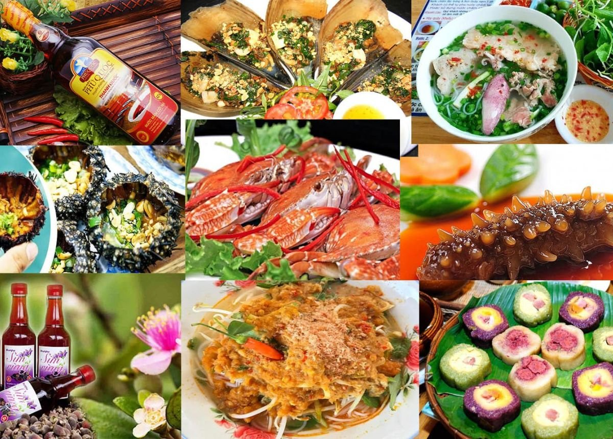
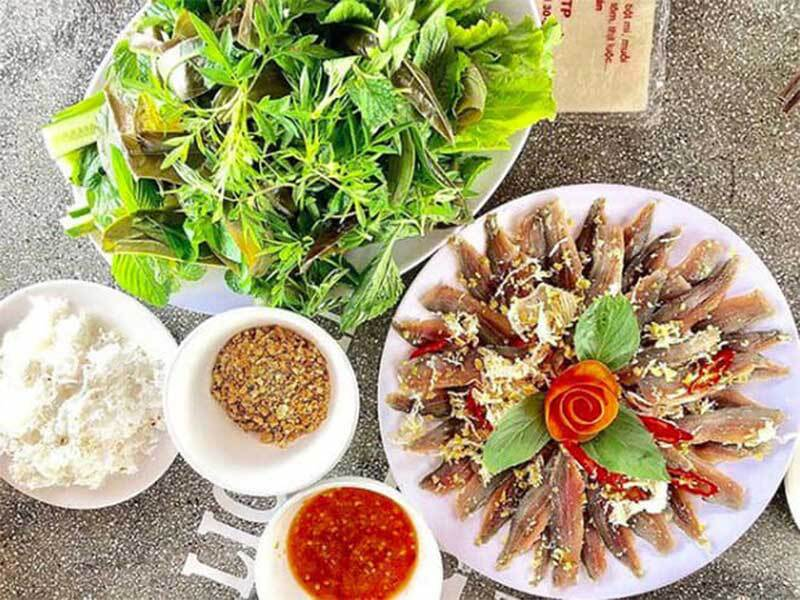
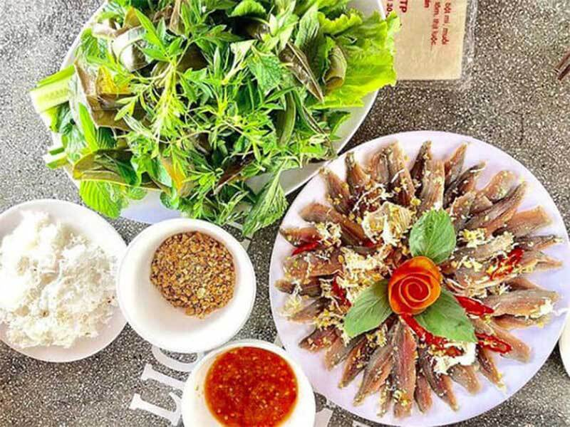

Du lịch Phú Quốc
Khám phá vẻ đẹp Phú Quốc – Đảo ngọc của Việt Nam
Khám phá vẻ đẹp Phú Quốc – Đảo ngọc của Việt Nam
Những Món Ăn Ngon Phú Quốc Không Nên Bỏ Lỡ
Đặc sản Phú Quốc được biết tới là một trong những điểm cộng khiến du khách yêu thích đảo ngọc. Ẩm thực Phú Quốc được chế biến theo một cách rất riêng, khiến bất cứ ai cũng phải xuýt xoa với hương vị thơm ngon, đậm đà.
Ăn gì ở Phú Quốc chắc hẳn là quan tâm của nhiều du khách khi lên kế hoạch đến đây. Đảo ngọc không chỉ níu chân du khách bởi cảnh quan biển đảo đẹp nên thơ mà còn bởi vô số món đặc sản Phú Quốc thơm ngon, hấp dẫn. Đến đây, bạn sẽ có cơ hội được thưởng thức những con mực tươi roi rói khi theo chân ngư dân ra khơi, ghẹ Hàm Ninh ngọt thịt, ốc gai nướng mỡ hành béo thơm hay chọn mua hải sản khô, hạt tiêu, rượu mỏ quạ, trà sâm biển về làm quà.
1. Đến Phú Quốc ăn gì?
1.1 Gỏi Cá Trích Phú Quốc
 

Gỏi cá trích Phú Quốc là món ăn đặc sản nổi tiếng với hương vị lạ miệng. Sự kết hợp hài hòa giữa thịt cá tươi sống được lấy từ phần lườn hai bên để bóp gỏi, và các nguyên liệu dừa nạo, hành tây, hành tím thái mỏng, ớt thái mỏng tạo nên độ ngọt béo cay cay vừa phải. Nếu bạn muốn thưởng thức món gỏi cá trích Phú Quốc lừng danh, hãy ghé đến Nhà hàng Vườn Táo- số 1 đường Trần Hưng Đạ, Dương Tơ, Phú Quốc nhé!
1.2 Bún kèn Phú Quốc


Ngoài những đặc sản quen thuộc như chả cua, nước mắm v.v... còn một món đặc sản Phú Quốc bạn không thể bỏ qua chính là bún kèn. Dù ít được nhắc đến trong danh sách những món ẩm thực Việt Nam, nhưng bún kèn là món ăn khá phổ biến trong bữa cơm của các gia đình Phú Quốc.
Bún kèn được nấu từ cá nhàu hay cá ngân dầm nhuyễn rồi chiên giòn. Sau đó cho nước cốt dừa, nước cá luộc, đu đủ, rau thơm, ớt đỏ trộn cùng nhau tạo nên tô bún kèn Phú Quốc “ăn một lần là nhớ mãi". Điểm bán bún kèn ngon có thể kể đến là tiệm Út Lượm, 87 30 tháng 4, thị trấn Dương Đông
1.3 Bún Quậy Phú Quốc
Bún quậy Phú Quốc là một món ăn đường phố nổi tiếng của đảo ngọc Phú Quốc, được nhiều du khách yêu thích bởi hương vị thơm ngon, đậm đà, mang đậm hương vị của biển cả. Món ăn này khá giống bún nước lèo, với phần nước dùng được nấu từ xương heo, tôm khô và các loại gia vị. Bún quậy Phú Quốc thường được ăn kèm với các loại rau sống và hải sản như mực, chả cá, trứng cút,... Khi ăn, bạn sẽ dùng đũa quậy đều bún, tôm khô, chả cá và nước dùng để tạo thành hỗn hợp sền sệt, thơm ngon.
Một vài địa điểm bán bún quậy ngon mà bạn nên cân nhắc là
- Quán bún quậy Kiến
- Quán bún quậy Hai Mập
- Quán bún quậy Trâm
1.4 Nhum Biển Nướng

Nhum biển nướng là một món ăn đặc sản nổi tiếng của nhiều vùng biển Việt Nam, đặc biệt là ở Phú Quốc. Món ăn này được làm từ những con nhum biển tươi ngon, được nướng chín vàng,thơm phức.
Nhum biển là một loài hải sản có giá trị dinh dưỡng cao, chứa nhiều protein, canxi, sắt,... Nhum biển có thể chế biến thành nhiều món ăn ngon khác nhau, nhưng món nhum biển nướng trứng cút và nhum biển nướng mỡ hành vẫn được yêu thích hơn cả. Vị béo bùi của trứng nhum hoà quyện cùng nước chấm chua ngọt thì quả là cực phẩm. Bạn đừng bỏ qua nhé!
1.5 Nước Mắm Phú Quốc
Không quá lời nếu bảo rằng một chén nước mắm Phú Quốc có thể “nâng tầm” bữa cơm gia đình của bạn. Nghề làm nước mắm ở Phú Quốc còn truyền thống hàng trăm năm, cho ra đời loại nước mắm trong veo, vị mặn mà, thơm ngon. Khi mua nước mắm Phú Quốc về làm quà tặng, bạn nên chọn các thương hiệu uy tín như Nước mắm Hưng Thịnh, Nước mắm Khải Hoàn, Nước mắm Phụng Hưng…